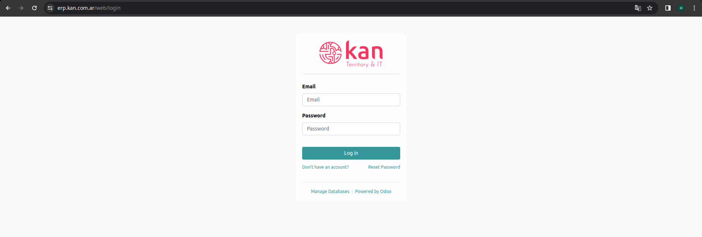
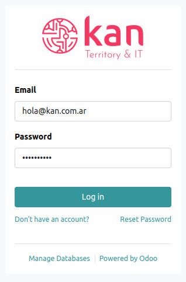
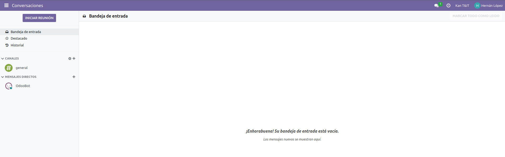
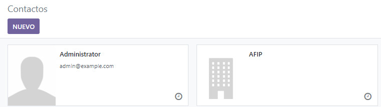
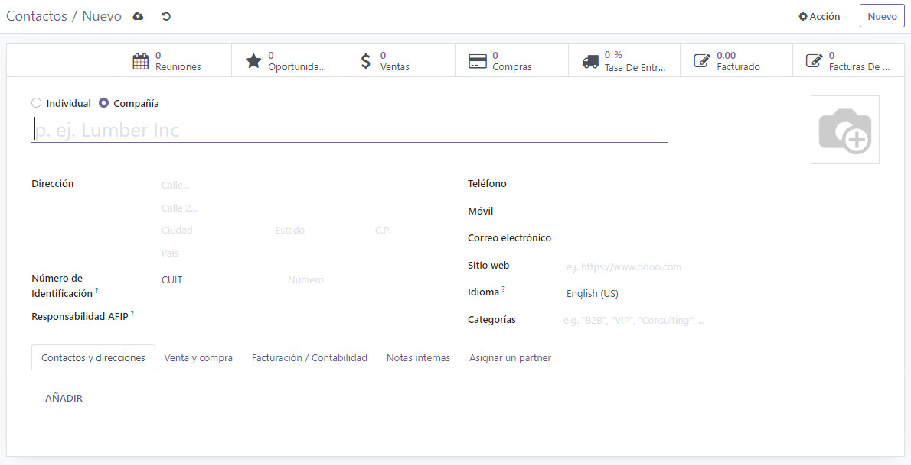
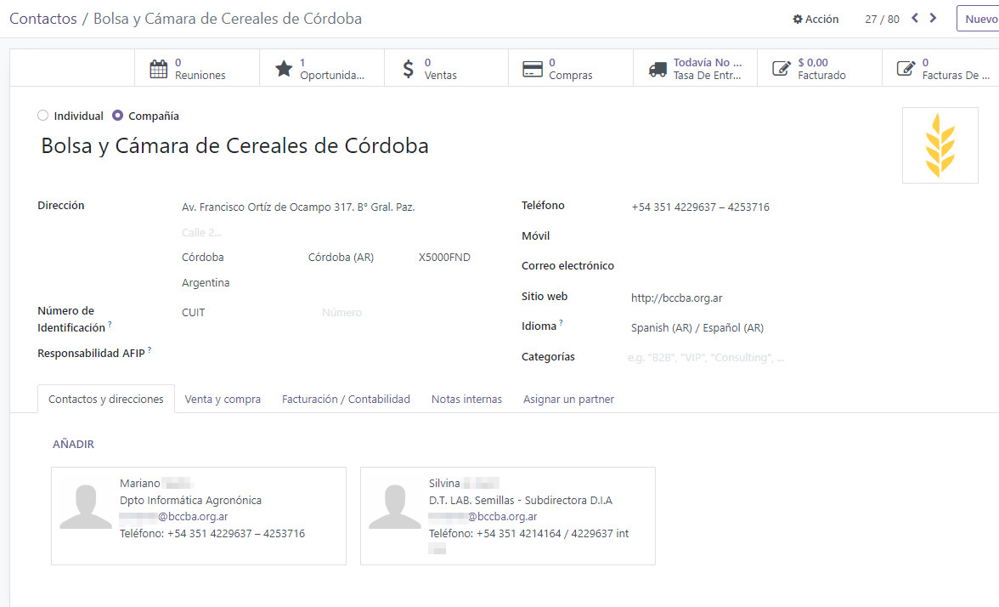
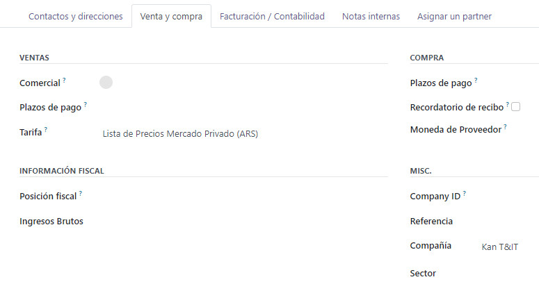
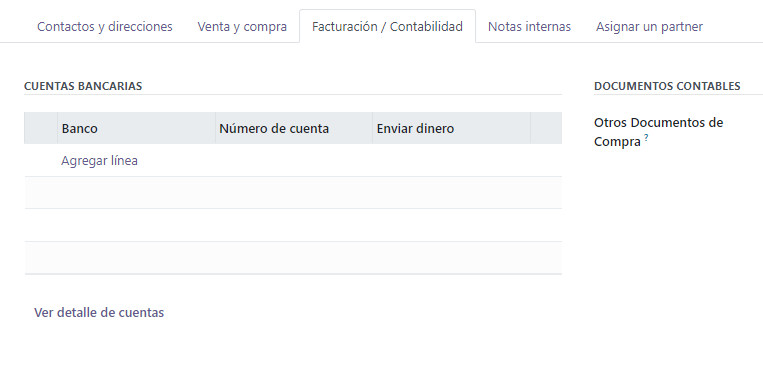
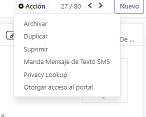

Introducción
Odoo es un sistema integrado de gestión empresarial (ERP) de código abierto que ofrece una amplia gama de aplicaciones empresariales, desde ventas y CRM hasta contabilidad y recursos humanos. Con una arquitectura modular y una interfaz amigable, Odoo proporciona soluciones flexibles y personalizables para mejorar la eficiencia operativa y la productividad en diversas áreas de una empresa.
Al acceder a https://erp.kan.com.ar/, se mostrará la ventana de inicio de sesión.

A continuación, ingresa tu nombre de usuario y contraseña según corresponda.

La siguiente pantalla muestra la interfaz de inicio de sesión de Odoo.

Contactos
El módulo de Contactos en Odoo facilita la gestión eficiente de la información de los clientes y proveedores de una empresa. Permite mantener un registro detallado de contactos, incluidos nombres, detalles de contacto, historial de interacciones y más, lo que resulta fundamental para fortalecer las relaciones comerciales y optimizar la comunicación empresarial.
Crear Contacto
Ingresamos al módulo de contactos

Luego nos lleva a la siguiente pantalla donde encontraremos un botón ‘Nuevo’ para crear un nuevo contacto:

En la siguiente pantalla podremos visualizar todos los datos a relevar y completar para que la tarjeta de contactos sea funcional:

Los datos a completar son:
- Nombre del Cliente
- Dirección
- Teléfono
- Correo Electrónico
- Sitio Web
- Idioma
- CUIT
- Responsabilidad AFIP (Monotributista, RI, Consumidor Final, etc)
Luego en el apartado de ‘Contactos y Direcciones’ añadiremos las personas relacionadas a esta empresa, con las que generalmente tenemos contacto directo.

Así completamos de manera eficiente una tarjeta de contactos, para cuando necesitemos utilizarla para realizar una factura o una oportunidad en el CRM, tengamos la posibilidad de obtener la mayor cantidad de datos posibles.
Luego de completado el cliente en su forma final, quedaría de esta forma:

Venta y Compra
Por otro lado en la pestaña de ‘Venta y Compra’ podemos definir algunos detalles del tipo VENTAS y COMPRA para ese cliente específico como por ejemplo:
- Comercial Asignado a ese cliente
- Plazos de Pago
- Tarifas
- Moneda del Proveedor
- Más Información Fiscal
- Sector a la que se dedica el cliente

Facturación y Contabilidad
En el apartado de ‘Facturación/Contabilidad’ podemos vincular cuentas bancarias del cliente o tipos de documentos (Factura A, B, C, etc)

Si queremos eliminar un contacto, debemos ir al contacto deseado, clickear en el botón de ‘Acción’ y eliminarlo o archivarlo en el caso de que queramos que desaparezca temporalmente de nuestra cartera de clientes:
